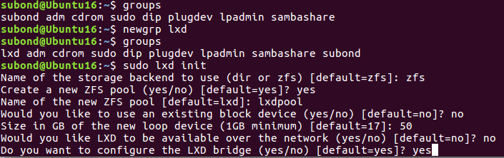
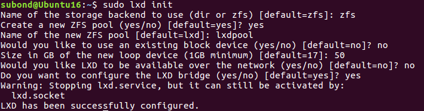
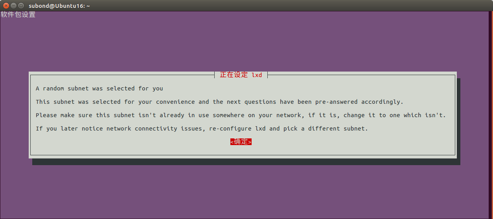
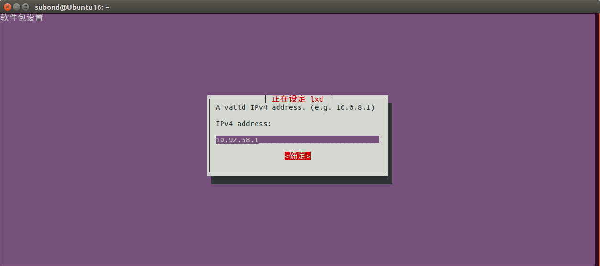
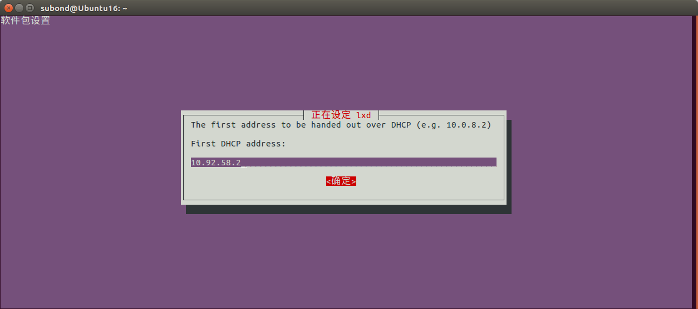
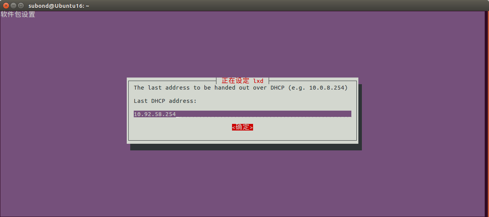
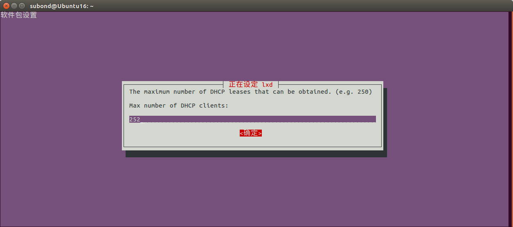
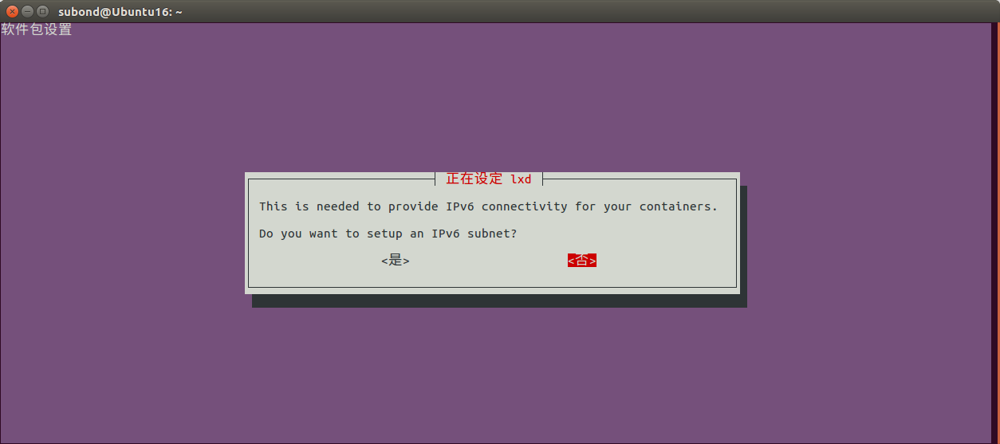
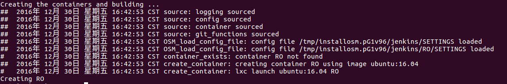

初识Open Source MANO
2016-11-10 by subondOpen Source MANO
Open Source Management and Orchestration (MANO)，简称Open Source MANO,即OSM，是一个开源社区，旨在为NFV提供满足商用NFV网络需求的生产质量(production-quality)的MANO软件堆栈，具有创建商用公开发布信息的模型能力，适用于所有所有人，适用于所有的VNFs(虚拟网络功能)，而且更重要的是，小操作与VIM(Virtual Infrastructure Management,虚拟基础设施管理)无关。OSM与NFV ISG信息模型保持一致，同时能够根据其实施经验提供第一手的反馈。
MANO致力于“管理和编排”，是ETSI NFV定义的架构框架的功能模块的一部分。如图所示。
如前所述，ETSI NFV架构框架的两个关键组件就是NFV Orchestrator和VNF Manager,称为NFV MANO。另外，对于管理人员来说，还需要其他层(比如服务编排)，才能够启动真正的NFV服务。开源软件可以促进ETSI对NFV架构的实现，向ETSI ISG NFV提供实用和基本的反馈，并增加NFV实现之间的互操作性和可能性。
OSM Release ONE已经经过设计、测试和记录，可以实现快速安装，并创建一个可扩展和互操作的开放MANO环境。它极大地增强了与其他组件(VNFs,VIMs,SDN控制器)的互操作性，可以创建一个(plug-in)框架来进行平台维护和扩展，使得技术的提供和支持更加容易。此外，Release ONE提高了管理员和开发人员的在可用性和安装过程中体验，以及增强了NFV和网络服务的建模能力。为了符合OSI开源工程的目标，这种建模输出工作将会贡献到ETSI NFV中。Release ONE也提供了极其灵活的虚拟化网络功能(VNF)配置和高级网络管理，以及改进的故障排除功能和高级日志记录。白皮书中概括了OSM的主要框架，开发的新功能以及Release ONE部分开放内容。
Open Source MANO白皮书地址OSM-Whitepaper-TechContent-ReleaseONE-FINAL.pdf
安装OSM
前期准备/系统要求
从源安装OSM
1) 8 CPUs, 16G RAM, 100GB硬盘以及可用的网络接口；
2) Ubuntu 16.04系统，并配置LXD容器
LXD配置如下：
sudo apt update sudo apt install zfs lxd sudo newgrp lxd
接下来进行lxc初始化设置，使用命令sudo lxd init,并进行如下设置：

成功后，会出现以下信息。
安装之前，系统需要安装版本控制管理工具git，sudo apt install -y git；接下来，获取安装脚本，进行安装即可。
wget https://osm-download.etsi.org/ftp/osm-1.0-one/install_from_source.sh chmod +x install_from_source.sh ./install_from_source.sh
安装过程中，需要进行LXD的相关配置，比较简单，可自行设置。我的部分设置如下：







安装成功后，会出现如下信息：
